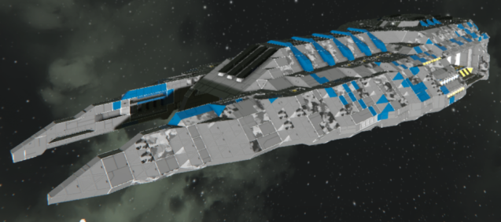
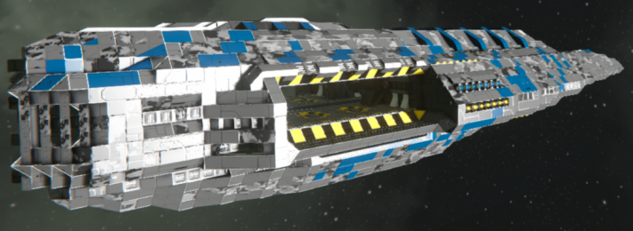
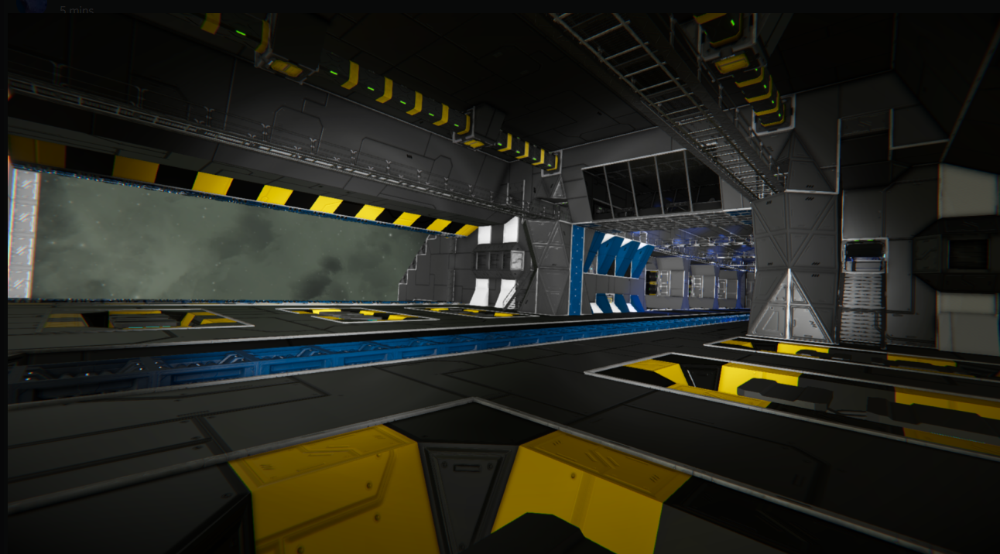

Here, I will explain how to build your first ship. you want to start of by loading a creative world, and pressing G on your keyboard. Next, you can navigate to the top of your screen to see a search filter. In here you can find any block in the game, and if you use mods you can find your modded blocks using this search filter. Down the left hand side of the screen you can see different tags, these are grouped items that have a purpose connected to the title. If the title is "power" then you will find batteries and Reactors in that area.
Different blocks have different stats. For example, Heavy armour blocks increase the health of the block, however slows down your ship by adding more mass to it. light armour blocks have less health, but does not apply as much weight to the ship. This is why you choose which material to use for each ship. If your going to build a miner, my recommendation is to use Light Armour. If you are going to build a fighting ship, such as a Capital ship or a Freighter, use Heavy armour blocks. If your building a fighter, I strongly recommend that you build out of both. Surround important parts of your fighter such as the power, the pipes, and the hydrogen tank with heavy armour, but then make the frame and the hull of the fighter out of Light armour blocks.
when you place down your first block, you want to press M and look at it, a colourd line should appear, if you left click on the block, then press N to disable it then press N again to enable it (just to stop it lagging) You will have added a mirror mode, if you place a block one side of the line, it will place on the other. You can do this for the sides, back and front, and the top and bottem. press N to enable / disable it, but you must be looking at it to disable / enable it
To make your ship turn, left / right, you must add a block named "gyroscope" to it, you can place it where you want and the more of them you place the more power it has to turn left / right.
To power your ship, you can use several methods which I will cover in the next section.
To control your ship, just place the block named "control seat" or "flight seat" and then press F on it to sit. Use "W""A""S""D" to move.
When building a ship, you may feel the need to start again because of the way it looks. But, most ships turn out perfectly fine. Here are some pictures of ships
that look amazing and fly perfectly fine in Space Engineers with very few problems.



This is content.